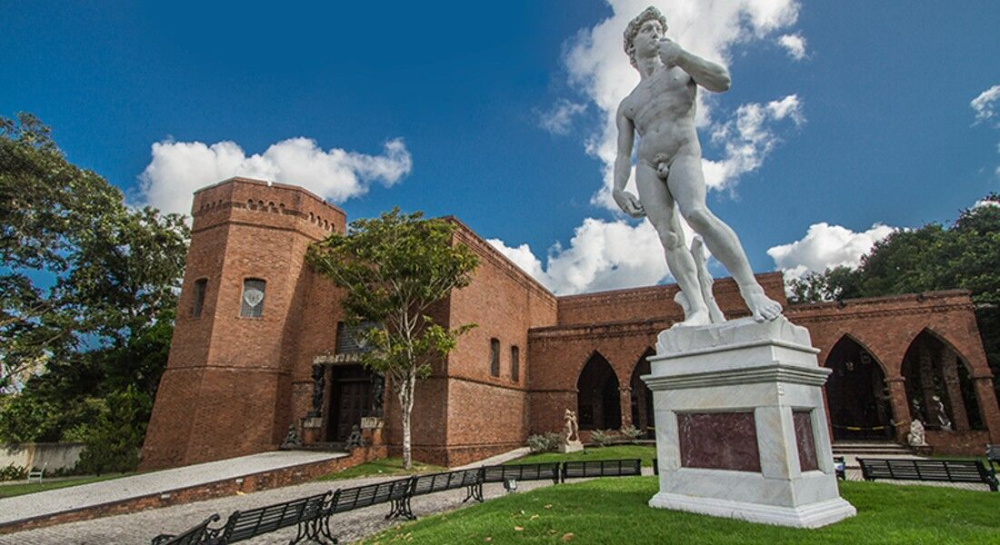
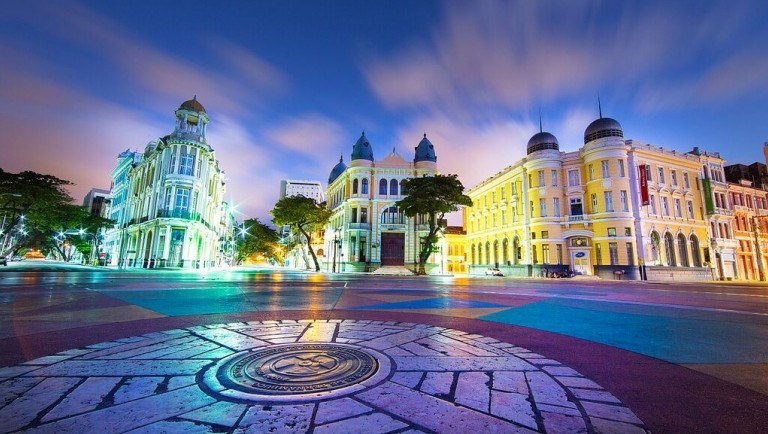
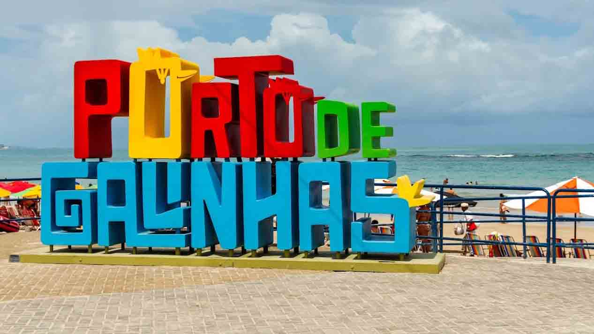

A Veneza Brasileira espera por você com cultura, praia e sabor.
O Recife é uma cidade vibrante, cortada por rios e pontes, famosa por sua rica história, arquitetura colonial e um polo gastronômico de dar água na boca. Prepare-se para dias de sol, cultura e muita alegria.

Um museu de arte único ao ar livre, cercado pela Mata Atlântica, repleto de esculturas fantásticas do artista Francisco Brennand.

O coração do Recife Antigo. É o ponto de onde todas as distâncias de Pernambuco são medidas, cercado por prédios históricos e o Parque das Esculturas.

Localizada no município vizinho de Ipojuca, é uma das praias mais famosas do Brasil, conhecida por suas piscinas naturais de águas mornas e cristalinas.